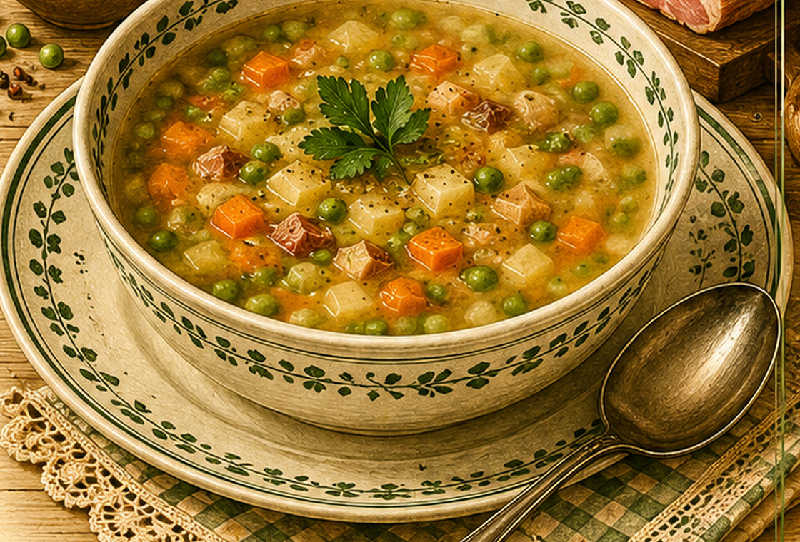

Gemüsesuppe
Eine schlichte Gemüsesuppe, bei der das Gemüse zunächst in Fett gedünstet wird.

Originale Überlieferung
Das Gemüse wird geschält und in Würfel geschnitten. In einem Topf wird Fett erhitzt und das Gemüse darin gedämpft. Danach kommen Wasser, Salz und Petersilie hinzu. Nach Bedarf wird etwas Mehl eingerührt; zum Schluss würzt man mit Pfeffer und kocht das Gemüse gar.
Moderne Übertragung
Saisonales Gemüse wird in wenig Fett angeschwitzt, mit Wasser aufgefüllt und weich gekocht. Etwas Mehl kann die Suppe leicht binden.
Zutaten
- etwa 800 g gemischtes Suppengemüse
- 1 Zwiebel
- 1–2 EL Fett oder Butter
- 1,5–2 l Wasser
- 1 EL Mehl, nach Wunsch
- Salz und Pfeffer
- Petersilie
Zubereitung
- Gemüse und Zwiebel putzen und in kleine Würfel schneiden.
- Fett in einem Topf erhitzen und das Gemüse darin einige Minuten dünsten.
- Mit Wasser auffüllen, salzen und langsam weich kochen.
- Für eine leichte Bindung Mehl mit kaltem Wasser glatt rühren und einrühren.
- Mit Pfeffer und Petersilie abschmecken.